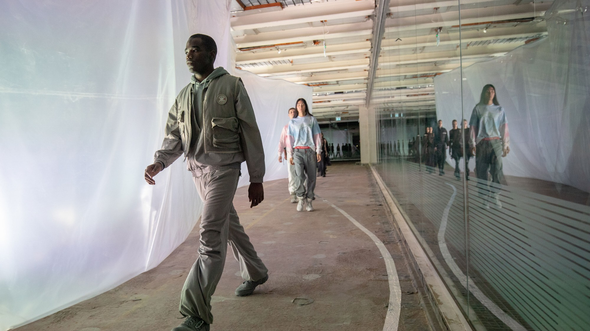
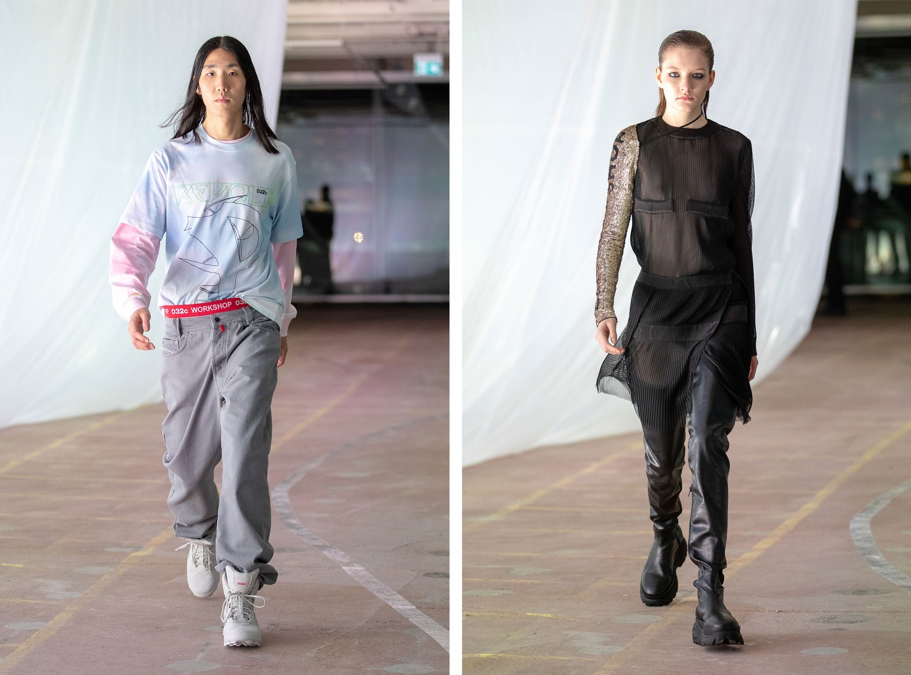
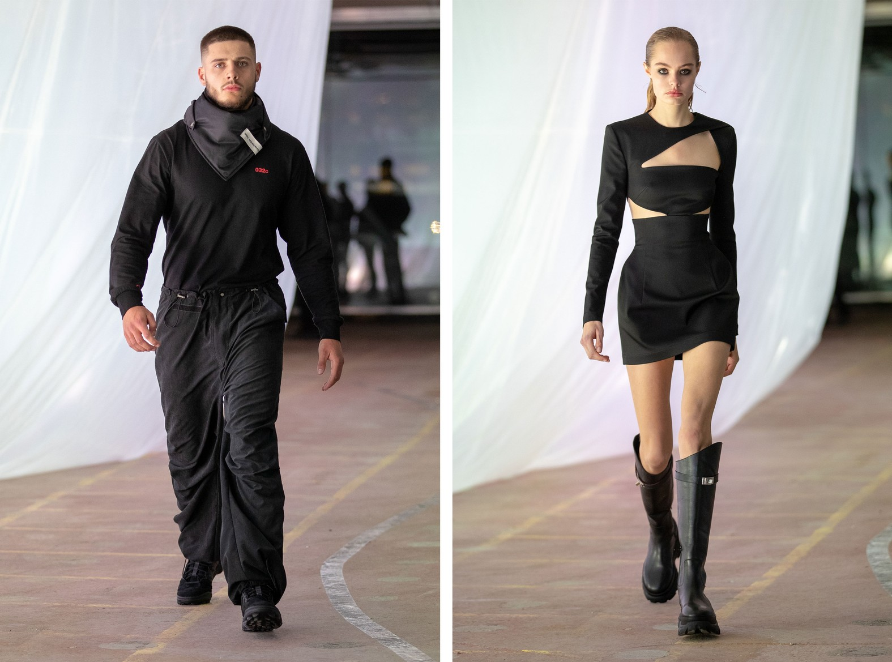

WHAT HAPPENED AT 032C'S
DEBUT CATWALK SHOW IN LONDON
Berlin-based magazine-turned-brand showed
their first womenswear collection last night.
“I love building sites so much,” Maria Koch, the designer behind 032c’s label, is unexpectedly and enthusiastically explaining backstage. 032c have just staged their first, full, womenswear catwalk show in London, in a building site nestled above The Store at 180 Strand. Backstage is a mess of energy and hyperactivity, a constant stream of hyped-up kids and fashion bigwigs filter past. “I kind of fell in love with this space at first sight, this specific construction site,” Maria continues. “How messy and fantastic it was! I really have warm, romantic feelings for construction sites, in general. I find them so melancholic, so beautiful; something is happening, something is changing, something is lost and something new is created. I find this moment so interesting.” That might as well, as a description, stand in for 032c in a whole –– which is in a process of expanding, developing, becoming. What began in Berlin as a poetically intellectual fashion magazine in 2000 has grown into a fashion label now offering a ‘proper’ ready-to-wear collection, alongside their merch lines and the magazine and a website and running the editorial arm of the ecommerce site SSENSE.

Importantly they have grown into this space without selling out, watering down, chasing trends or changing their aesthetic. They’ve instead defined this new arena that fashion exists in in 2018, that exists equally IRL and on URL. Their ventures into fashion began with covetable T-shirt merch collabs with artists like Cali Thornhill Dewitt (pre-Yeezy and pre-Some Ware) and other designers like Gosha Rubchinskiy. Then they made Sade and Arthur Russell and Helmut Lang and Fassbinder bootleg shirts and everything they did all sold out pretty much instantly. A kind of cult surrounded it. Maria is, herself, ex of Jil Sander and Marios Schwab, and the plan has always been to grow 032c into the kind of creatively eclectic business that could easily encompass all this formal diversity. It had grown naturally, and so it feels organic. “That’s because we have always planned to reach this moment,” Maria says. “The plan was get 032c to the point where we could host a proper ready-to-wear show like this.” Except of course all those distinctions and genres and hierarchies are collapsing right now, streetwear exists in the same intellectual sphere as couture even if the prices and business models are very different. The vapidest of couture is not intrinsically ‘better’ than the cleverest piece of screenprinted DIY merch. This dialogue is the heart of 032c.
“We are going to do more ‘proper’, ready-to-wear, collections,” Maria says, of the brands future plans. “We are doing another show at our Reference Festival, next May, and then we will show a collection in Paris. But we will still do drops of apparel and merchandise when the ideas are right. We are flexible, but you have to have respect what each thing stands for, it's parameters, otherwise what we do would just be braindead. We respect ready-to-wear, but at the same time we have to be true to ourselves, find this balance. We are figuring it out... it's a non-stop negotiation.”

And in this collection that negotiation was set against the dominance of streetwear as a catch-all terminology “that means everything and nothing”. Maria instead looked to her youth for this collection’s inspiration. Not streetwear, but clubwear. Berlin, rave and graffiti, enclosed creative scenes and the communities that surrounded them. It was about the codes of what you wear, “The right sweater. The right shoes. The right shops. Knowing the right DJs and the right clubs to go to. It was really an achievement to be in there, and back then you could only achieve that through research, by finding different streams of knowledge. Right now it feels very different.”
But rather than simply losing themselves in the auras of long vanished golden ages, this collection, titled Cosmic Workshop, made those references feel alive and current. It was, more or less, the story of real Berlin rave boys and illusory Berlin rave girls; “the kind of girl these boys dream of –– this kind of woman is unreachable, though, she doesn't really exist. It’s a fantasy.” It played out in a palette of soft and delicate grays and whites, gentle tie-died pinks and blues, a focus on simplicity and practicality and durability, an almost militant constancy of silhouette. The girls were sexier; cut-out black dresses, sheer layers, stomping boots, crystal embellishments and harnessed winks to BDSM. The models marched to the sound of pumping Berghain techno along a translucent curtain wrapped around the building’s elevator shaft. It resembled those used to clad building sites, works in progress, which Maria so loves.